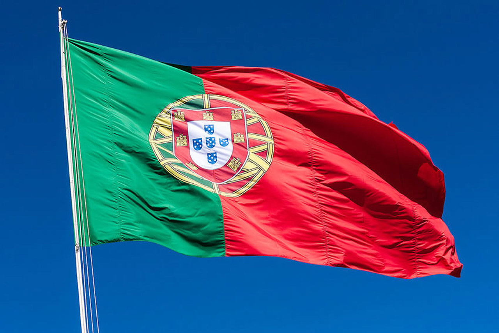
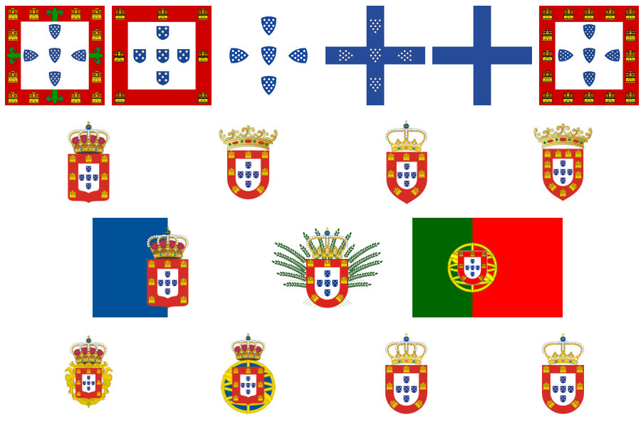
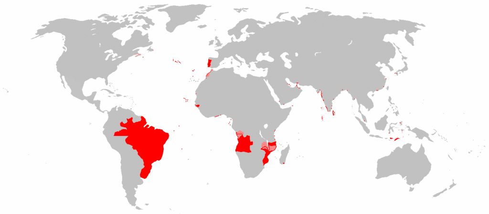
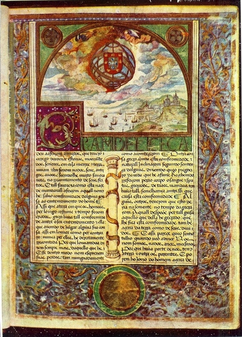
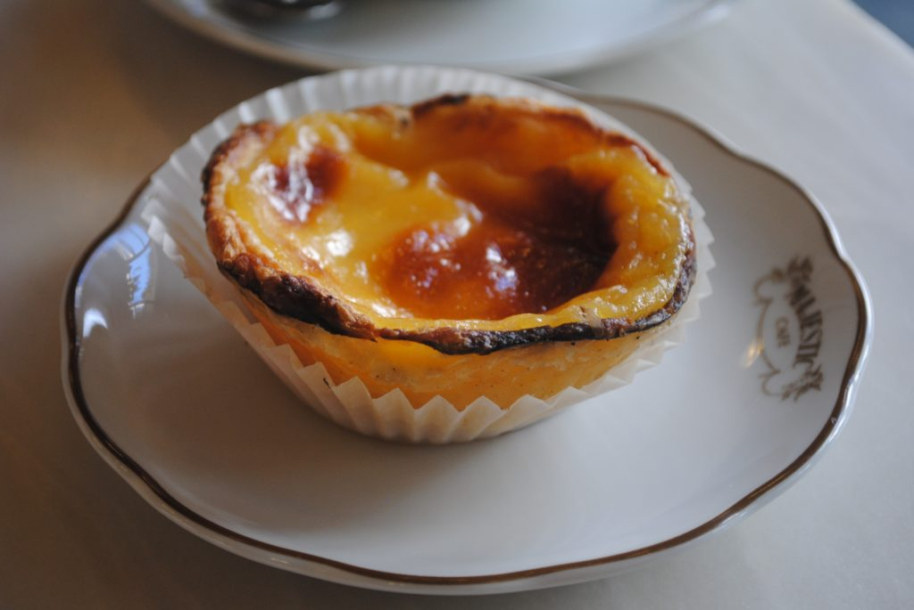
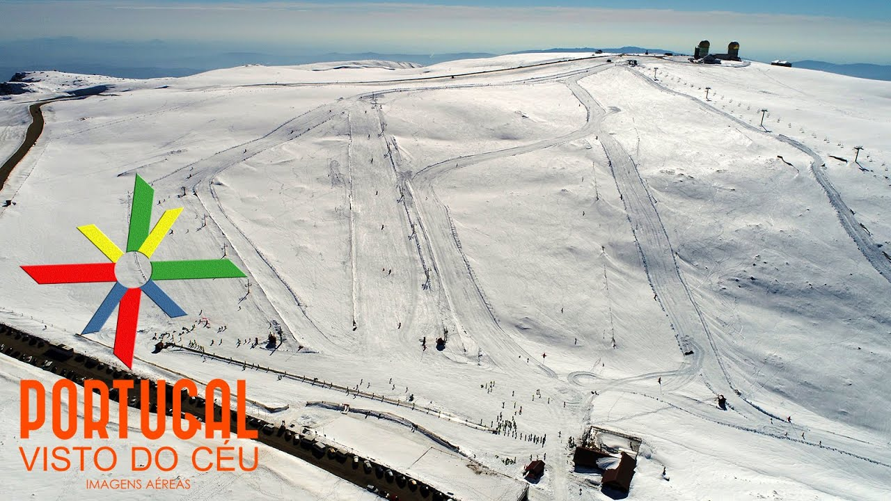
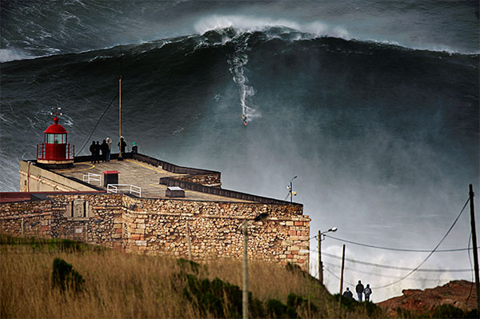
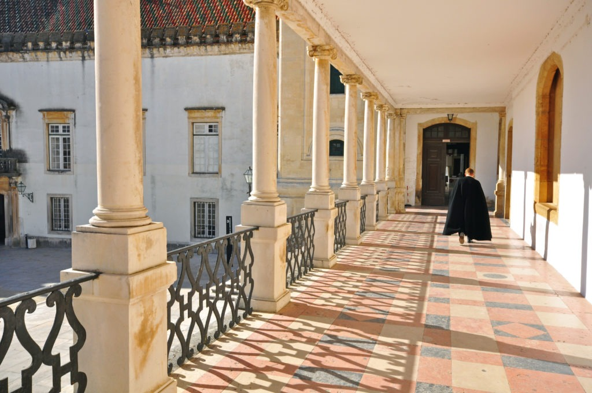

10 CHOSES QUE VOUS POUVEZ VOUS INTERESSER SUR LE PORTUGAL !

1-Le plus ancien pays d’Europe

Le Portugal est le plus ancien pays d’Europe. Le doyen européen est indépendant depuis 1139 ! C’est à cette date que Dom Afonso gagna la bataille contre les Maures qui permit au pays de proclamer son indépendance, et Afonso Henriques fut alors proclamé premier roi du Portugal ! D’ailleurs, Lisbonne est elle aussi une vieille dame de l’Europe, puisqu’il s’agit de la plus vieille ville d’Europe de l’Ouest : plus vieille encore que Rome !
2-Le Portugal fut l’un des plus grands Empires au Monde

Fut un temps où le Portugal était un immense Empire colonial, et la moitié du Nouveau Monde était sous son administration ! En 1494, le Traité de Tordesillas accorda au Portugal le contrôle de plusieurs territoires en Afrique, en Asie et bien sur le Brésil. C’est pourquoi le Portugal est le premier Empire colonial européen, le premier à être installé sur plusieurs continents, et surtout l’un des 10 plus grands empires de l’histoire de l’humanité ! C’est pourquoi aujourd’hui encore, de nombreux pays sont lusophones : le Brésil, l’Angola, le Mozambique, le Cap-Vert, la Guinée-Bissau, Sao Tomé-et-Principe, etc.
3-La plus vieille alliance diplomatique encore en vigueur au monde

Le plus vieux traité encore appliqué au monde lie le Portugal et l’Angleterre. L’accord de Windsor a en effet été signé par les deux pays en 1386 soit il y a plus de 500 ans ! Il a permis d’établir une coopération militaire et commerciale entre les deux pays, et a notamment été important lors de la Première Guerres Mondiale durant laquelle l’Angleterre et le Portugal ont largement coopéré.
4-Une des plus vieilles universités au monde
La jolie ville de Coimbra abrite l’une des plus vieilles universités du monde ! Il s’agit de l’Université de Coimbra, qui est également l’une des meilleures du pays ! Elle a été construite en 1290, ce qui fait d’elle la 21ème plus vieille université au monde, et la 9ème en Europe !
D’ailleurs, qui dit vieille université, dit vieille bibliothèque universitaire. La bibliothèque Joanina, dans l’Université, est à voir absolument au Portugal ! On y laisse même vivre des dizaines de chauves-souris pour manger les vers et les insectes et ainsi protéger les vieux livres.
5-Le Portugal est le premier pays à avoir aboli l’esclavage
Oui, c’est bien le même pays qui a été l’un des premiers à pratiquer le commerce négrier et qui lui a donné son essor au XVIème siècle ! Et pourtant, le Portugal est le premier pays d’Europe à avoir abolit l’esclavage en 1761 grâce au Marquis de Pombal, une importante figure de l’histoire portugaise qui a également permis de reconstruire la ville très rapidement après le tremblement de terre de Lisbonne ! Il est l’un des illustres personnages les plus importants du Portugal, et vous croiserez forcément une place, un parc ou une rue au nom du marquês de Pombal.
6-La peine de perpétuité n’existe pas !
Au Portugal, on croit à la réinsertion des prisonniers dans la société. En effet, dans le droit portugais, il n’existe aucune peine de perpétuité ! La peine maximale est alors de 25 ans, et peut être étendue à 30 ans à titre exceptionnel.
7-Seules 6 personnes au monde connaissent la recette originale des Pastéis de Belém

Toujours imités, jamais égalés… La pâtisserie star du Portugal est un secret bien gardé depuis sa création au XIXème siècle ! Si on connaît bien les Pastéis de Nata, les seuls à pouvoir vraiment les appeler Pastéis de Belém sont la Fábrica dos Pastéis de Belém, à Lisbonne. Et bien qu’ils en confectionnent avec soin jusqu’à 40 000 par jour, seuls les 6 maîtres pâtissiers connaissent la recette secrète gardée sous clef ! C’est pourquoi même si vous croisez ces petits entremets dans de la pâte feuilletée dans tout le pays, aucun n’égale celui de Belém !
8-Il existe une station de ski au Portugal !

Le Portugal, le soleil, l’Atlantique, l’huile d’olive… et le ski ! Dans le centre du pays, il existe une station de ski à Serra da Estrela, le point culminant du Portugal continental ! Bon, ne vous attendez pas aux Tignes, mais vous pouvez chausser vos skis et partir tout schuss au Portugal, ne serait-ce que pour dire cette phrase et que personne ne vous croie !
9-La plus haute vague jamais surfée au monde

Sur la côte Atlantique, Nazaré est particulièrement connue pour ses vagues ressemblant à des véritables murs d’eau. C’est ici que le 08 novembre 2017, le surfeur professionnel Rodrigo Koxa(Brésilien) a maîtrisé la plus haute vague jamais surfée ! Un véritable monstre de 24 mètres de haut !
10-Les uniformes universitaires et les rues de Porto ont inspiré J.K. Rowlling pour Harry Potter

J.K. Rowlling a vécut à Porto au début des années 1990. Vous ne voyez pas une légère ressemblance entre le costume traditionnel des étudiants de Porto et les vêtements d’Harry Potter ? Et oui, les capes traditionnelles que portent les étudiants portugais ont probablement eu leur rôle à jouer dans les capes que portent les élèves de Poudlard ! Mais les ressemblances entre Porto et la saga ne s’arrêtent pas là… Pour beaucoup de fans, les rues de Porto ressemblent en bien des points aux décors d’Harry Potter !